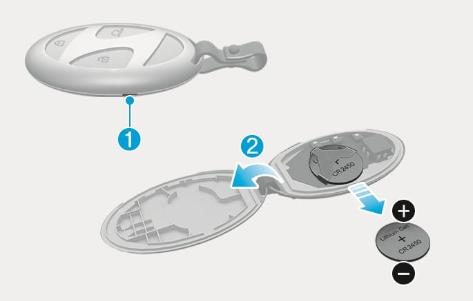

스마트 키 배터리 교체하기
스마트 키의 작동 상태에 따라, 필요한 경우 배터리를 교체하십시오.
-
CR2450 리튬이온 배터리 1개가 사용됩니다.
스마트 키에 사용되는 동전형 리튬 배터리는 유아나 어린이 손이 닿지 않는 곳에 보관하십시오.
-
리튬 배터리를 삼키면 2시간 안에 치명적 신체 손상이 발생할 수 있습니다.
-
배터리가 삼켜지거나 몸 속에 삽입된 것으로 의심되는 경우 즉시 의사의 진료를 받으십시오.
-
스마트 키 내부의 전자 회로는 정전기에 취약해 쉽게 손상될 수 있으므로 주의하십시오.
-
직접 배터리를 교체하기 어려운 경우 당사 직영 하이테크센터나 블루핸즈에서 배터리 교체를 의뢰하십시오.
-
사용에 적합한 규격 배터리만 사용하십시오. 규격에 맞지 않는 배터리를 사용하는 경우 접촉 불량 등으로 인해 간헐적 오작동이 발생할 수 있습니다.
-
사용한 배터리는 가정용 쓰레기와 분리해 적법하고 안전한 방법으로 폐기하십시오.

2C_ReplaceSmartKeyBattery
-
스마트 키 옆면의 홈(1)에 부드러운 천을 대고 일자 드라이버(-)를 이용해 스마트 키 커버를 분리하십시오(2).
-
사용한 배터리를 제거하고 극성(+/-)에 주의하며 새 배터리를 삽입하십시오. 극성이 맞지 않게 삽입하면 배터리가 방전되어 스마트 키를 사용할 수 없습니다.
-
스마트 키 커버를 닫고 가장자리를 눌러 완전히 결합하십시오.
-
스마트 키가 정상적으로 작동하는지 확인하십시오.